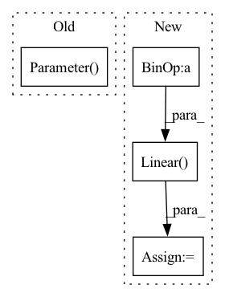

Pattern ID :33465

Before Change
self.img_protype = nn.Parameter(img_init_protypes)
text_init_protypes = torch.load(args.text_init_protypes_path).float()
self.text_protype = nn.Parameter(text_init_protypes)
//self.img_feat_head = nn.Linear(args.d_model, 40)
After Change
self.txt_dim_reduction = nn.Linear(args.d_txt_ebd, args.cmm_dim)
self.dim_reduction = nn.Linear(args.d_txt_ebd + args.d_img_ebd, args.cmm_dim)
self.img_dim_reduction = nn.Linear(args.d_img_ebd, args.cmm_dim)
self.fuse_feature = nn.Linear(args.d_model*2, args.d_model)
In pattern: SUPERPATTERN
Frequency: 3
Non-data size: 4
Instances
Fragment ID: 96266892
Project Name: markin-wang/xpronet
Commit Name: 242c7e87230c59aa027e9f3d4c20678413f5c8d0
Time: 2021-12-01
Author: cserwj@gmail.com
File Name: modules/base_cmn.py
M Class Name: BaseCMN
N Class Name: BaseCMN
M Method Name: __init__(3)
N Method Name: __init__(3)
M Parent Class: AttModel
N Parent Class: AttModel
M File Name: modules/base_cmn.py
N File Name: modules/base_cmn.py
M Start Line: 347
M End Line: 396
N Start Line: 357
N End Line: 391
'>
Before Change
self.U_head = nn.Parameter(torch.rand((self.layer_size, self.hidden_dim * 2 + self.config.token_type_dim)))
self.W_head = nn.Parameter(torch.rand((self.layer_size, self.hidden_dim * 2 + self.config.token_type_dim)))
self.V_head = nn.Parameter(torch.rand(self.layer_size, len(self.config.relations)))
self.b_s_head = nn.Parameter(torch.rand(self.layer_size))
//self.b_c_head = nn.Parameter(torch.rand(config.num_relations))
self.dropout_embedding_layer = torch.nn.Dropout(config.dropout_embedding)
self.dropout_head_layer = torch.nn.Dropout(config.dropout_head)
After Change
self.selection_u = nn.Linear(self.hidden_dim * 2 + self.config.token_type_dim, config.rel_emb_size)
self.selection_v = nn.Linear(self.hidden_dim * 2 + self.config.token_type_dim, config.rel_emb_size)
self.selection_uv = nn.Linear(2*config.rel_emb_size, config.rel_emb_size)
// self.weights_loss = [100 for i in range(config.num_relations)]
// self.weights_loss[0] = 1
// self.focal_loss = Focal_loss(alpha=self.weights_loss, gamma=4, num_classes=config.num_relations)
'>
Fragment ID: 96266877
Project Name: mangonihao/multiheadjointentityrelationextraction_simple
Commit Name: b0c3a4b3431150e66259a9e669709aa60a31c887
Time: 2021-03-19
Author: 2075419247@qq.com
File Name: modules/joint_model.py
M Class Name: JointModel
N Class Name: JointModel
M Method Name: __init__(3)
N Method Name: __init__(3)
M Parent Class: nn.Module
N Parent Class: nn.Module
M File Name: modules/joint_model.py
N File Name: modules/joint_model.py
M Start Line: 34
M End Line: 61
N Start Line: 44
N End Line: 73
'>
Before Change
nn.LayerNorm(dim) if dual_patchnorm else None,
)
self.axial_pos_emb = nn.Parameter(torch.randn(2, patch_height_width, dim) * 0.02)
self.to_pixels = nn.Sequential(
LayerNorm(dim),
nn.Linear(dim, pixel_patch_dim),
After Change
// axial positional embeddings, parameterized by an MLP
pos_emb_dim = dim // 2
self.axial_pos_emb_height_mlp = nn.Sequential(
Rearrange("... -> ... 1"),
nn.Linear(1, pos_emb_dim),
nn.SiLU(),
nn.Linear(pos_emb_dim, pos_emb_dim),
nn.SiLU(),
nn.Linear(pos_emb_dim, dim)
)
'>
Fragment ID: 96266894
Project Name: lucidrains/recurrent-interface-network-pytorch
Commit Name: b323532e40464af272a7a4e43275fb70579232ae
Time: 2023-03-05
Author: lucidrains@gmail.com
File Name: rin_pytorch/rin_pytorch.py
M Class Name: RIN
N Class Name: RIN
M Method Name: __init__(12)
N Method Name: __init__(12)
M Parent Class: nn.Module
N Parent Class: nn.Module
M File Name: rin_pytorch/rin_pytorch.py
N File Name: rin_pytorch/rin_pytorch.py
M Start Line: 363
M End Line: 392
N Start Line: 394
N End Line: 412